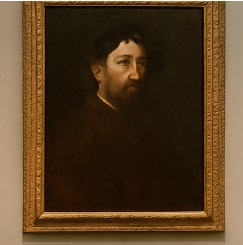
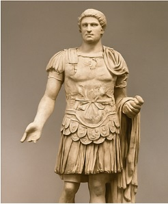

Un'opera d'arte affascinante vista nella galleria principale
Questo dipinto mi ha catturato per i suoi colori intensi e per l'espressione del volto del personaggio raffigurato. E' come se raccontasse una storia senza parole.
2. Un'antica scultura

Scultura romana in marmo esposta nella sala archeologica.
La scultura era alta quasi due metri e mostrava un antico guerriero romano. I dettagli del viso e dell'armatura erano incredibilmente realistici.
Le cose che ho imparato oggi:
Le statue romane venivano spesso dipinte a colori vivaci
Molti dipinti nascondono simboli e significati nascosti